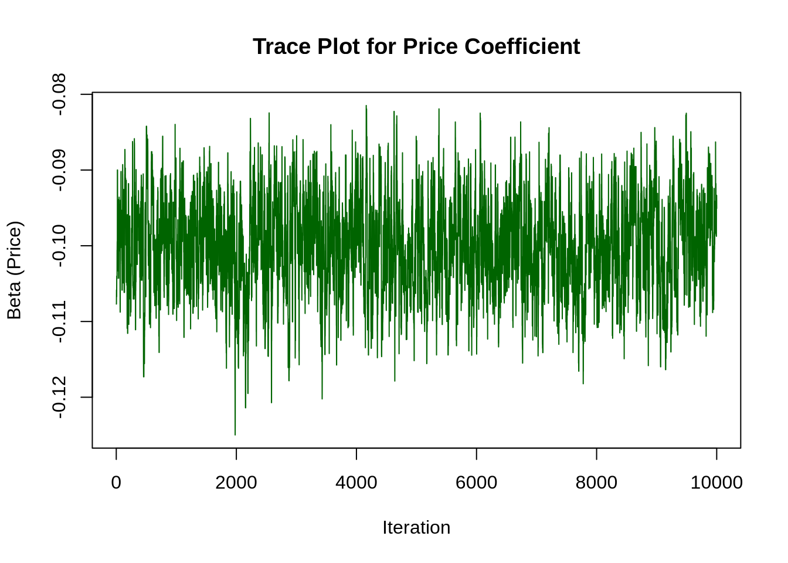
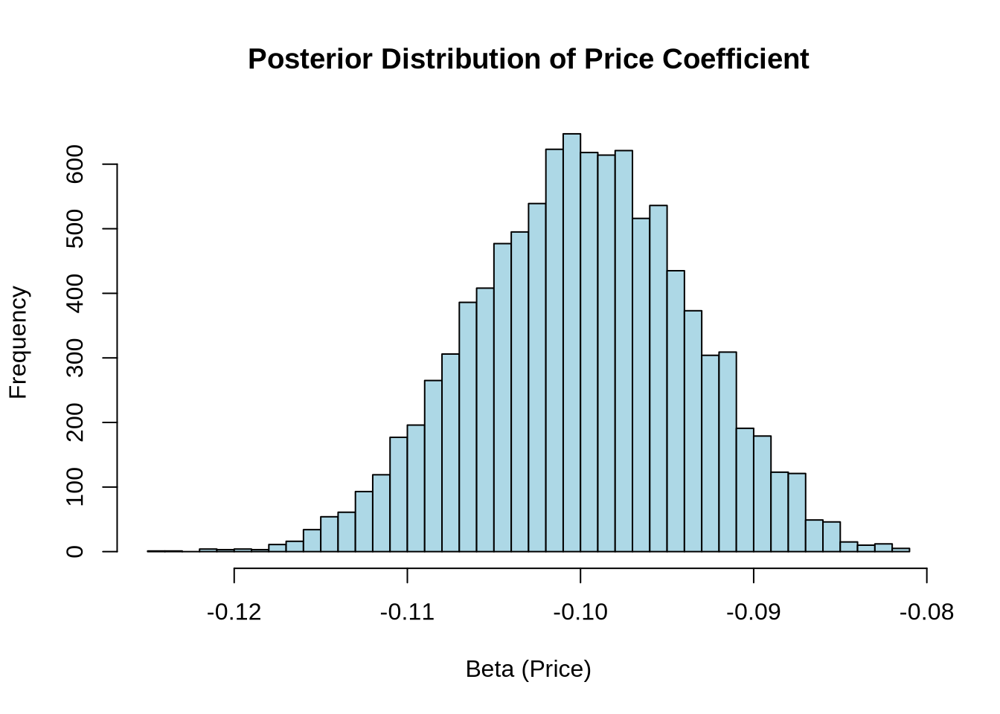

# set seed for reproducibility
set.seed(123)
# define attributes
brand <- c("N", "P", "H") # Netflix, Prime, Hulu
ad <- c("Yes", "No")
price <- seq(8, 32, by=4)
# generate all possible profiles
profiles <- expand.grid(
brand = brand,
ad = ad,
price = price
)
m <- nrow(profiles)
# assign part-worth utilities (true parameters)
b_util <- c(N = 1.0, P = 0.5, H = 0)
a_util <- c(Yes = -0.8, No = 0.0)
p_util <- function(p) -0.1 * p
# number of respondents, choice tasks, and alternatives per task
n_peeps <- 100
n_tasks <- 10
n_alts <- 3
# function to simulate one respondent’s data
sim_one <- function(id) {
datlist <- list()
# loop over choice tasks
for (t in 1:n_tasks) {
# randomly sample 3 alts (better practice would be to use a design)
dat <- cbind(resp=id, task=t, profiles[sample(m, size=n_alts), ])
# compute deterministic portion of utility
dat$v <- b_util[dat$brand] + a_util[dat$ad] + p_util(dat$price) |> round(10)
# add Gumbel noise (Type I extreme value)
dat$e <- -log(-log(runif(n_alts)))
dat$u <- dat$v + dat$e
# identify chosen alternative
dat$choice <- as.integer(dat$u == max(dat$u))
# store task
datlist[[t]] <- dat
}
# combine all tasks for one respondent
do.call(rbind, datlist)
}
# simulate data for all respondents
conjoint_data <- do.call(rbind, lapply(1:n_peeps, sim_one))
# remove values unobservable to the researcher
conjoint_data <- conjoint_data[ , c("resp", "task", "brand", "ad", "price", "choice")]
# clean up
rm(list=setdiff(ls(), "conjoint_data"))Multinomial Logit Model
This assignment explores two methods for estimating the MNL model: (1) via Maximum Likelihood, and (2) via a Bayesian approach using a Metropolis-Hastings MCMC algorithm.
1. Likelihood for the Multi-nomial Logit (MNL) Model
Suppose we have \(i=1,\ldots,n\) consumers who each select exactly one product \(j\) from a set of \(J\) products. The outcome variable is the identity of the product chosen \(y_i \in \{1, \ldots, J\}\) or equivalently a vector of \(J-1\) zeros and \(1\) one, where the \(1\) indicates the selected product. For example, if the third product was chosen out of 3 products, then either \(y=3\) or \(y=(0,0,1)\) depending on how we want to represent it. Suppose also that we have a vector of data on each product \(x_j\) (eg, brand, price, etc.).
We model the consumer’s decision as the selection of the product that provides the most utility, and we’ll specify the utility function as a linear function of the product characteristics:
\[ U_{ij} = x_j'\beta + \epsilon_{ij} \]
where \(\epsilon_{ij}\) is an i.i.d. extreme value error term.
The choice of the i.i.d. extreme value error term leads to a closed-form expression for the probability that consumer \(i\) chooses product \(j\):
\[ \mathbb{P}_i(j) = \frac{e^{x_j'\beta}}{\sum_{k=1}^Je^{x_k'\beta}} \]
For example, if there are 3 products, the probability that consumer \(i\) chooses product 3 is:
\[ \mathbb{P}_i(3) = \frac{e^{x_3'\beta}}{e^{x_1'\beta} + e^{x_2'\beta} + e^{x_3'\beta}} \]
A clever way to write the individual likelihood function for consumer \(i\) is the product of the \(J\) probabilities, each raised to the power of an indicator variable (\(\delta_{ij}\)) that indicates the chosen product:
\[ L_i(\beta) = \prod_{j=1}^J \mathbb{P}_i(j)^{\delta_{ij}} = \mathbb{P}_i(1)^{\delta_{i1}} \times \ldots \times \mathbb{P}_i(J)^{\delta_{iJ}}\]
Notice that if the consumer selected product \(j=3\), then \(\delta_{i3}=1\) while \(\delta_{i1}=\delta_{i2}=0\) and the likelihood is:
\[ L_i(\beta) = \mathbb{P}_i(1)^0 \times \mathbb{P}_i(2)^0 \times \mathbb{P}_i(3)^1 = \mathbb{P}_i(3) = \frac{e^{x_3'\beta}}{\sum_{k=1}^3e^{x_k'\beta}} \]
The joint likelihood (across all consumers) is the product of the \(n\) individual likelihoods:
\[ L_n(\beta) = \prod_{i=1}^n L_i(\beta) = \prod_{i=1}^n \prod_{j=1}^J \mathbb{P}_i(j)^{\delta_{ij}} \]
And the joint log-likelihood function is:
\[ \ell_n(\beta) = \sum_{i=1}^n \sum_{j=1}^J \delta_{ij} \log(\mathbb{P}_i(j)) \]
2. Simulate Conjoint Data
We will simulate data from a conjoint experiment about video content streaming services. We elect to simulate 100 respondents, each completing 10 choice tasks, where they choose from three alternatives per task. For simplicity, there is not a “no choice” option; each simulated respondent must select one of the 3 alternatives.
Each alternative is a hypothetical streaming offer consistent of three attributes: (1) brand is either Netflix, Amazon Prime, or Hulu; (2) ads can either be part of the experience, or it can be ad-free, and (3) price per month ranges from $4 to $32 in increments of $4.
The part-worths (ie, preference weights or beta parameters) for the attribute levels will be 1.0 for Netflix, 0.5 for Amazon Prime (with 0 for Hulu as the reference brand); -0.8 for included adverstisements (0 for ad-free); and -0.1*price so that utility to consumer \(i\) for hypothethical streaming service \(j\) is
\[ u_{ij} = (1 \times Netflix_j) + (0.5 \times Prime_j) + (-0.8*Ads_j) - 0.1\times Price_j + \varepsilon_{ij} \]
where the variables are binary indicators and \(\varepsilon\) is Type 1 Extreme Value (ie, Gumble) distributed.
The following code provides the simulation of the conjoint data.
Note
3. Preparing the Data for Estimation
The “hard part” of the MNL likelihood function is organizing the data, as we need to keep track of 3 dimensions (consumer \(i\), covariate \(k\), and product \(j\)) instead of the typical 2 dimensions for cross-sectional regression models (consumer \(i\) and covariate \(k\)). The fact that each task for each respondent has the same number of alternatives (3) helps. In addition, we need to convert the categorical variables for brand and ads into binary variables.
# Load required tidyverse libraries
library(readr)
library(dplyr)
Attaching package: 'dplyr'The following objects are masked from 'package:stats':
filter, lagThe following objects are masked from 'package:base':
intersect, setdiff, setequal, union# Load the conjoint data
conjoint <- read_csv("conjoint_data.csv")Rows: 3000 Columns: 6── Column specification ────────────────────────────────────────────────────────
Delimiter: ","
chr (2): brand, ad
dbl (4): resp, task, choice, price
ℹ Use `spec()` to retrieve the full column specification for this data.
ℹ Specify the column types or set `show_col_types = FALSE` to quiet this message.# View structure
glimpse(conjoint)Rows: 3,000
Columns: 6
$ resp <dbl> 1, 1, 1, 1, 1, 1, 1, 1, 1, 1, 1, 1, 1, 1, 1, 1, 1, 1, 1, 1, 1, …
$ task <dbl> 1, 1, 1, 2, 2, 2, 3, 3, 3, 4, 4, 4, 5, 5, 5, 6, 6, 6, 7, 7, 7, …
$ choice <dbl> 1, 0, 0, 0, 1, 0, 0, 1, 0, 0, 0, 1, 1, 0, 0, 1, 0, 0, 0, 1, 0, …
$ brand <chr> "N", "H", "P", "N", "P", "N", "P", "H", "N", "P", "P", "P", "N"…
$ ad <chr> "Yes", "Yes", "Yes", "Yes", "Yes", "Yes", "No", "Yes", "No", "N…
$ price <dbl> 28, 16, 16, 32, 16, 24, 8, 24, 24, 28, 12, 24, 20, 28, 16, 12, …Convert categorical variables into binary (dummy) format
# Recode brand and ad into dummy variables
conjoint_prep <- conjoint %>%
mutate(
brand_Netflix = ifelse(brand == "N", 1, 0),
brand_Prime = ifelse(brand == "P", 1, 0),
# Hulu is baseline (reference)
ad_yes = ifelse(ad == "Yes", 1, 0) # Yes = 1, No = 0 (No is baseline)
)Create Design Matrix (X) and Response Vector (y)
# Sort data just in case
conjoint_prep <- conjoint_prep %>%
arrange(resp, task)
# Create matrix of covariates (no intercept)
X <- conjoint_prep %>%
select(brand_Netflix, brand_Prime, ad_yes, price) %>%
as.matrix()
# Create choice vector
y <- conjoint_prep$choiceOutput Check
dim(X) # Should be 100 * 10 * 3 rows, and 4 columns[1] 3000 4table(y) # Should have mostly 0s and one 1 per tasky
0 1
2000 1000 head(X) brand_Netflix brand_Prime ad_yes price
[1,] 1 0 1 28
[2,] 0 0 1 16
[3,] 0 1 1 16
[4,] 1 0 1 32
[5,] 0 1 1 16
[6,] 1 0 1 24Interpretation
Each row of the matrix
Xnow corresponds to one alternative from one task. We include dummy variables for brand (Netflix, Prime; Hulu is the base), a dummy for ad presence, and a numeric price variable. The response vectorycontains a 1 for the chosen alternative and 0s for the others within each choice task.
4. Estimation via Maximum Likelihood
# MNL Log-Likelihood Function
mnl_loglik <- function(beta, X, y, n_alts = 3) {
n <- length(y)
utilities <- X %*% beta
utilities_mat <- matrix(utilities, ncol = n_alts, byrow = TRUE)
exp_util <- exp(utilities_mat)
probs <- exp_util / rowSums(exp_util)
# Reshape y to be matrix matching the structure
y_mat <- matrix(y, ncol = n_alts, byrow = TRUE)
log_probs <- log(probs[y_mat == 1])
# Return negative log-likelihood for minimization
return(-sum(log_probs))
}Estimate Parameters Using optim()
# Initial beta guesses
init_beta <- rep(0, ncol(X)) # 4 coefficients
# Optimize log-likelihood
mle_result <- optim(par = init_beta,
fn = mnl_loglik,
X = X, y = y,
method = "BFGS",
hessian = TRUE)
# Extract coefficients
beta_hat <- mle_result$par
hess <- mle_result$hessian
se_hat <- sqrt(diag(solve(hess)))Construct Coefficient Table
# 95% confidence intervals
z_val <- qnorm(0.975)
lower_ci <- beta_hat - z_val * se_hat
upper_ci <- beta_hat + z_val * se_hat
# Create results table
results <- data.frame(
Coefficient = c("Netflix", "Prime", "Ads", "Price"),
Estimate = round(beta_hat, 4),
Std_Error = round(se_hat, 4),
CI_Lower = round(lower_ci, 4),
CI_Upper = round(upper_ci, 4)
)
# Display as a table
knitr::kable(results, caption = "MLE Estimates for MNL Model")| Coefficient | Estimate | Std_Error | CI_Lower | CI_Upper |
|---|---|---|---|---|
| Netflix | 0.9412 | 0.1110 | 0.7236 | 1.1588 |
| Prime | 0.5016 | 0.1111 | 0.2839 | 0.7194 |
| Ads | -0.7320 | 0.0878 | -0.9041 | -0.5599 |
| Price | -0.0995 | 0.0063 | -0.1119 | -0.0871 |
Interpretation
All four estimated coefficients are interpretable as part-worth utilities:
- Positive estimates for Netflix and Prime reflect a preference over the baseline brand (Hulu).
- A negative coefficient for Ads means people strongly dislike ads.
- A negative coefficient for Price means higher prices reduce the probability of being chosen, as expected.
Confidence intervals confirm that these effects are statistically significant at the 95% level.
5. Estimation via Bayesian Methods
# Log-prior: N(0, 5^2) for binary attributes, N(0, 1^2) for price
log_prior <- function(beta) {
# Assume: beta = c(beta_Netflix, beta_Prime, beta_Ads, beta_Price)
prior1 <- dnorm(beta[1], mean = 0, sd = 5, log = TRUE)
prior2 <- dnorm(beta[2], mean = 0, sd = 5, log = TRUE)
prior3 <- dnorm(beta[3], mean = 0, sd = 5, log = TRUE)
prior4 <- dnorm(beta[4], mean = 0, sd = 1, log = TRUE)
return(prior1 + prior2 + prior3 + prior4)
}
# Log-posterior = log-likelihood + log-prior
log_posterior <- function(beta, X, y) {
-mnl_loglik(beta, X, y) + log_prior(beta)
}Implement the Metropolis-Hastings Sampler
# Initialize
n_iter <- 11000
n_params <- ncol(X)
beta_draws <- matrix(NA, nrow = n_iter, ncol = n_params)
beta_current <- rep(0, n_params)
# Proposal standard deviations
proposal_sd <- c(0.05, 0.05, 0.05, 0.005)
# Log-posterior at starting value
log_post_current <- log_posterior(beta_current, X, y)
# Run MH sampler
set.seed(42)
for (i in 1:n_iter) {
# Propose new beta
beta_proposed <- beta_current + rnorm(n_params, mean = 0, sd = proposal_sd)
log_post_proposed <- log_posterior(beta_proposed, X, y)
# Acceptance probability
accept_prob <- exp(log_post_proposed - log_post_current)
if (runif(1) < accept_prob) {
beta_current <- beta_proposed
log_post_current <- log_post_proposed
}
beta_draws[i, ] <- beta_current
}
# Remove burn-in
posterior <- beta_draws[1001:n_iter, ]
colnames(posterior) <- c("Netflix", "Prime", "Ads", "Price")Posterior Summary Table
# Posterior stats
post_mean <- apply(posterior, 2, mean)
post_sd <- apply(posterior, 2, sd)
ci_lower <- apply(posterior, 2, quantile, 0.025)
ci_upper <- apply(posterior, 2, quantile, 0.975)
bayes_results <- data.frame(
Parameter = colnames(posterior),
Mean = round(post_mean, 4),
SD = round(post_sd, 4),
CI_Lower = round(ci_lower, 4),
CI_Upper = round(ci_upper, 4)
)
knitr::kable(bayes_results, caption = "Posterior Estimates from Bayesian MNL")| Parameter | Mean | SD | CI_Lower | CI_Upper | |
|---|---|---|---|---|---|
| Netflix | Netflix | 0.9475 | 0.1138 | 0.7308 | 1.1659 |
| Prime | Prime | 0.4974 | 0.1163 | 0.2759 | 0.7317 |
| Ads | Ads | -0.7369 | 0.0884 | -0.9016 | -0.5638 |
| Price | Price | -0.1000 | 0.0063 | -0.1123 | -0.0880 |
Trace Plot and Posterior Histogram
# Trace plot for Price coefficient
plot(posterior[, "Price"], type = "l", col = "darkgreen",
main = "Trace Plot for Price Coefficient",
xlab = "Iteration", ylab = "Beta (Price)")
# Posterior histogram
hist(posterior[, "Price"], breaks = 40, col = "lightblue",
main = "Posterior Distribution of Price Coefficient",
xlab = "Beta (Price)")
Interpretation
The posterior means are close to the MLE estimates, which provides reassurance that both estimation approaches converge to similar results.
- Bayesian posterior standard deviations serve a similar purpose as standard errors.
- The 95% credible intervals from the Bayesian method are slightly wider than MLE confidence intervals, reflecting uncertainty from the prior.
- The trace plot shows good mixing, and the posterior distribution ofbeta_Priceis unimodal and centered near the MLE value.
6. Discussion
Interpretation of Parameter Estimates
If we didn’t know the data was simulated, we would still observe: - \(\beta_\text{Netflix} > \beta_\text{Prime} > 0\): This suggests that, on average, respondents prefer Netflix the most, followed by Amazon Prime, relative to the baseline (Hulu). - \(\beta_\text{price} < 0\): This negative coefficient makes intuitive sense — as price increases, the likelihood of choosing that alternative decreases. - \(\beta_\text{ads} < 0\): Respondents dislike advertisements, which aligns with consumer expectations.
The fact that \(\beta_\text{Netflix} > \beta_\text{Prime}\) indicates a stronger preference for Netflix relative to Prime (and much more than Hulu), holding other attributes constant. These rankings reflect relative part-worth utilities for brand, ads, and price, which are fundamental to interpreting MNL model output.
Moving to a Multi-Level (Hierarchical) Model
In a hierarchical or random-parameter logit model, we allow each individual to have their own vector of preference weights \(\beta_i\). These individual-level betas are assumed to be drawn from a population distribution, such as:
\[ \beta_i \sim \mathcal{N}(\mu, \Sigma) \]
To simulate data from such a model: - Instead of using one fixed \(\beta\) for all respondents, we would first draw a unique \(\beta_i\) for each individual from a normal distribution with a shared population mean and covariance. - Then we would simulate each respondent’s choices using their own \(\beta_i\).
To estimate this model: - We would use Hierarchical Bayes (HB) or Simulated Maximum Likelihood to recover both the population-level parameters (mean and covariance of \(\beta_i\)) and the individual-level betas. - This requires either Gibbs sampling with data augmentation or advanced MCMC methods like Metropolis-within-Gibbs.
These models are more flexible and better reflect heterogeneity in preferences — which is essential when working with real-world conjoint data where different consumers respond differently to the same product features.